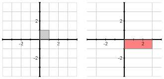

In this section, we will revisit the theory of eigenvalues and eigenvectors for the special class of matrices that are symmetric, meaning that the matrix equals its transpose. This understanding of symmetric matrices will enable us to form singular value decompositions later in the chapter. We’ll also begin studying variance in this section as it provides an important context that motivates some of our later work.
To begin, remember that if \(A\) is a square matrix, we say that \(\vvec\) is an eigenvector of \(A\) with associated eigenvalue \(\lambda\) if \(A\vvec=\lambda\vvec\text{.}\) In other words, for these special vectors, the operation of matrix multiplication simplifies to scalar multiplication.
Preview Activity7.1.1.
This preview activity reminds us how a basis of eigenvectors can be used to relate a square matrix to a diagonal one.
Figure7.1.1.Use these plots to sketch the vectors requested in the preview activity.
Suppose that \(D=\begin{bmatrix}
3 \amp 0 \\
0 \amp -1
\end{bmatrix}\) and that \(\evec_1 = \twovec10\) and \(\evec_2=\twovec01\text{.}\)
Sketch the vectors \(\evec_1\) and \(D\evec_1\) on the left side of Figure 7.1.1.
Sketch the vectors \(\evec_2\) and \(D\evec_2\) on the left side of Figure 7.1.1.
Sketch the vectors \(\evec_1+2\evec_2\) and \(D(\evec_1+2\evec_2)\) on the left side.
Give a geometric description of the matrix transformation defined by \(D\text{.}\)
Now suppose we have vectors \(\vvec_1=\twovec11\) and \(\vvec_2=\twovec{-1}1\) and that \(A\) is a \(2\by2\) matrix such that
\(D\) stretches vectors horizontally by a factor of 3 and reflects them in the horizontal axis.
\(A\) stretches vectors in the direction of \(\vvec_1\) by a factor of 3 and reflects them in the line defined by \(\vvec_1\text{.}\)
The effect of the two transformations are the same when viewed in the coordinate systems given by the appropriate set of vectors.
The preview activity asks us to compare the matrix transformations defined by two matrices, a diagonal matrix \(D\) and a matrix \(A\) whose eigenvectors are given to us. The transformation defined by \(D\) stretches horizontally by a factor of 3 and reflects in the horizontal axis, as shown in Figure 7.1.2

Figure7.1.2.The matrix transformation defined by \(D\text{.}\)
By contrast, the transformation defined by \(A\) stretches the plane by a factor of 3 in the direction of \(\vvec_1\) and reflects in the line defined by \(\vvec_1\text{,}\) as seen in Figure 7.1.3.
Figure7.1.3.The matrix transformation defined by \(A\text{.}\)
In this way, we see that the matrix transformations defined by these two matrices are equivalent after a \(45^\circ\) rotation. This notion of equivalence is what we called similarity in Section 5.3. There we considered a square \(m\by m\) matrix \(A\) that provided enough eigenvectors to form a basis of \(\real^m\text{.}\) For example, suppose we can construct a basis for \(\real^m\) using eigenvectors \(\vvec_1,\vvec_2,\ldots,\vvec_m\) having associated eigenvalues \(\lambda_1,\lambda_2,\ldots,\lambda_m\text{.}\) Forming the matrices,
which tells us that \(A=PDP^{-1} =
\begin{bmatrix}
1 \amp 2 \\
2 \amp 1
\end{bmatrix}
\text{.}\)
Notice that the matrix \(A\) has eigenvectors \(\vvec_1\) and \(\vvec_2\) that not only form a basis for \(\real^2\) but, in fact, form an orthogonal basis for \(\real^2\text{.}\) Given the prominent role played by orthogonal bases in the last chapter, we would like to understand what conditions on a matrix enable us to form an orthogonal basis of eigenvectors.
Subsection7.1.1Symmetric matrices and orthogonal diagonalization
Let’s begin by looking at some examples in the next activity.
Activity7.1.2.
Remember that the Python command scipy.linalg.eig(A) attempts to find a basis for \(\real^m\) consisting of eigenvectors of \(A\text{.}\) If successful, e, E = linalg.aig(A) provides a vector of eigen values e and a matrix E containing the associated eigenvectors as columns.
For each of the following matrices, determine whether there is a basis for \(\real^2\) consisting of eigenvectors of that matrix. When there is such a basis, form the matrices \(P\) and \(D\) such that \(A = PDP^{-1}\text{.}\)
The eigenvalues of this matrix are complex so there is no such basis.
There is one eigenvalue \(\lambda=2\) with multiplicity two. The associated eigenspace \(E_2\) is one-dimensional so there is not a basis of \(\real^2\) consisting of eigenvectors.
Only the last matrix \(A=\begin{bmatrix}
9 \amp 2 \\
2 \amp 6
\end{bmatrix}\text{.}\)
We form an orthonormal basis by scaling the eigenvectors to have length 1. This gives \(Q = \begin{bmatrix}
2/\sqrt{5} \amp 1/\sqrt{5} \\
1/\sqrt{5} \amp -2/\sqrt{5} \\
\end{bmatrix}\text{,}\) which is orthogonal since the columns form an orthonormal basis of \(\real^2\text{.}\)
Orthogonal matrices are invertible and have \(Q^{-1}
= Q^{\transpose}\)
If \(A=QDQ^{\transpose}\text{,}\) we have \(A^{\transpose}=(QDQ^{\transpose})^{\transpose} =
(Q^{\transpose})^{\transpose}D^{\transpose}Q^{\transpose} = QDQ^{\transpose} = A\text{.}\) This means that the matrix is symmetric.
The examples in this activity illustrate a range of possibilities. First, a matrix may have complex eigenvalues, in which case it will not be diagonalizable. Second, even if all the eigenvalues are real, there may not be a basis of eigenvalues if the dimension of one of the eigenspaces is less than the algebraic multiplicity of the associated eigenvalue.
We are interested in matrices for which there is an orthogonal basis of eigenvectors. When this happens, we can create an orthonormal basis of eigenvectors by scaling each eigenvector in the basis so that its length is 1. Putting these orthonormal vectors into a matrix \(Q\) produces an orthogonal matrix, which means that \(Q^{\transpose}=Q^{-1}\text{.}\) We then have
\begin{equation*}
A = QDQ^{-1} = QDQ^{\transpose}.
\end{equation*}
In this case, we say that \(A\) is orthogonally diagonalizable.
Definition7.1.4.
If there is an orthonormal basis of \(\real^n\) consisting of eigenvectors of the matrix \(A\text{,}\) we say that \(A\) is orthogonally diagonalizable. In particular, we can write \(A=QDQ^{\transpose}\) where \(Q\) is an orthogonal matrix.
When \(A\) is orthogonally diagonalizable, notice that
\begin{equation*}
A^{\transpose}=(QDQ^{\transpose})^{\transpose} = (Q^{\transpose})^{\transpose}D^{\transpose}Q^{\transpose} = QDQ^{\transpose} = A.
\end{equation*}
That is, when \(A\) is orthogonally diagonalizable, \(A=A^{\transpose}\) and we say that \(A\) is symmetric.
Definition7.1.5.
A symmetric matrix \(A\) is one for which \(A=A^{\transpose}\text{.}\)
Example7.1.6.
Consider the matrix \(A =
\begin{bmatrix}
-2 \amp 36 \\
36 \amp -23
\end{bmatrix}
\text{,}\) which has eigenvectors \(\vvec_1 = \twovec43\text{,}\) with associated eigenvalue \(\lambda_1=25\text{,}\) and \(\vvec_2=\twovec{3}{-4}\text{,}\) with associated eigenvalue \(\lambda_2=-50\text{.}\) Notice that \(\vvec_1\) and \(\vvec_2\) are orthogonal so we can form an orthonormal basis of eigenvectors:
Notice also that, as expected, \(A\) is symmetric; that is, \(A=A^{\transpose}\text{.}\)
Example7.1.7.
If \(A = \begin{bmatrix}
1 \amp 2 \\
2 \amp 1 \\
\end{bmatrix}
\text{,}\) then there is an orthogonal basis of eigenvectors \(\vvec_1 = \twovec11\) and \(\vvec_2 =
\twovec{-1}1\) with eigenvalues \(\lambda_1=3\) and \(\lambda_2=-1\text{.}\) Using these eigenvectors, we form the orthogonal matrix \(Q\) consisting of eigenvectors and the diagonal matrix \(D\text{,}\) where
Notice that the matrix transformation represented by \(Q\) is a \(45^\circ\) rotation while that represented by \(Q^{\transpose}=Q^{-1}\) is a \(-45^\circ\) rotation. Therefore, if we multiply a vector \(\xvec\) by \(A\text{,}\) we can decompose the multiplication as
That is, we first rotate \(\xvec\) by \(-45^\circ\text{,}\) then apply the diagonal matrix \(D\text{,}\) which stretches and reflects, and finally rotate by \(45^\circ\text{.}\) We may visualize this factorization as in Figure 7.1.8.
Figure7.1.8.The transformation defined by \(A=QDQ^{\transpose}\) can be interpreted as a sequence of geometric transformations: \(Q^{\transpose}\) rotates by \(-45^\circ\text{,}\)\(D\) stretches and reflects, and \(Q\) rotates by \(45^\circ\text{.}\)
In fact, a similar picture holds any time the matrix \(A\) is orthogonally diagonalizable.
We have seen that a matrix that is orthogonally diagonalizable must be symmetric. In fact, it turns out that any symmetric matrix is orthogonally diagonalizable. We record this fact in the next theorem.
Theorem7.1.9.The Spectral Theorem.
The matrix \(A\) is orthogonally diagonalizable if and only if \(A\) is symmetric.
Activity7.1.3.
Each of the following matrices is symmetric so the Spectral Theorem tells us that each is orthogonally diagonalizable. The point of this activity is to find an orthogonal diagonalization for each matrix.
To begin, find a basis for each eigenspace. Use this basis to find an orthogonal basis for each eigenspace and put these bases together to find an orthogonal basis for \(\real^m\) consisting of eigenvectors. Use this basis to write an orthogonal diagonalization of the matrix.
Consider the matrix \(A = B^{\transpose}B\) where \(B = \begin{bmatrix}
0 \amp 1 \amp 2 \\
2 \amp 0 \amp 1
\end{bmatrix}
\text{.}\) Explain how we know that \(A\) is symmetric and then find an orthogonal diagonalization of \(A\text{.}\)
We have eigenvectors \(\vvec_1=\twovec12\) and \(\vvec_2 = \twovec{2}{-1}\) with associated eigenvalues \(\lambda_1 = 4\) and \(\lambda_2=-1\text{.}\) We form an orthonormal basis of eigenvectors, \(\uvec_1=\twovec{1/\sqrt{5}}{2/\sqrt{5}}\) and \(\uvec_2=\twovec{2/\sqrt{5}}{-1/\sqrt{5}}\text{.}\) This gives
We have eigenvalues \(\lambda_1=10\) with associated eigenvector \(\vvec_1=\threevec211\) and \(\lambda_2 = 1\) with associated eigenvectors \(\vvec_2=\threevec10{-2}\) and \(\vvec_3=\threevec01{-2}\text{.}\) Notice that \(\vvec_1\) is orthogonal to both \(\vvec_2\) and \(\vvec_3\text{,}\) but \(\vvec_2\) and \(\vvec_3\) are not orthogonal to one another. We can, however, apply Gram-Schmidt to create an orthogonal basis of the eigenspace \(E_1\text{.}\) We can then form an orthonormal basis so that
We have \(A^{\transpose} = (B^{\transpose}B)^{\transpose} = B^{\transpose}(B^{\transpose})^{\transpose}=B^{\transpose}B = A\) so \(A\) must be symmetric. Then we find the orthogonal diagonalization
As the examples in Activity 7.1.3 illustrate, the Spectral Theorem implies a number of things. Namely, if \(A\) is a symmetric \(m\by m\) matrix, then
the eigenvalues of \(A\) are real.
there is a basis of \(\real^m\) consisting of eigenvectors.
two eigenvectors that are associated to different eigenvalues are orthogonal.
We won’t justify the first two facts here since that would take us rather far afield. However, it will be helpful to explain the third fact. To begin, notice the following:
Suppose a symmetric matrix \(A\) has eigenvectors \(\vvec_1\text{,}\) with associated eigenvalue \(\lambda_1=3\text{,}\) and \(\vvec_2\text{,}\) with associated eigenvalue \(\lambda_2 = 10\text{.}\) Notice that
which can only happen if \(\vvec_1\cdot\vvec_2 = 0\text{.}\) Therefore, \(\vvec_1\) and \(\vvec_2\) are orthogonal.
More generally, the same argument shows that any two eigenvectors of any symmetric matrix associated to distinct eigenvalues must be orthogonal.
Proposition7.1.12.
If \(A\) is symmetric, then any pair of eigenvectors for \(A\) with distinct eigenvalues are orthogonal.
That is, if \(\vvec_1\) and \(\vvec_2\) are eigenvectors associated with distinct eigenvalues \(\lambda_1 \neq lambda_2\text{,}\) then \(\vvec \perp \vvec_2\text{.}\)
Subsection7.1.2Variance
Many of the ideas we’ll encounter in this chapter, such as orthogonal diagonalizations, can be applied to the study of data. In fact, it can be useful to understand these applications because they provide an important context in which mathematical ideas have a more concrete meaning and their motivation appears more clearly. For that reason, we will now introduce the statistical concept of variance as a way to gain insight into the significance of orthogonal diagonalizations.
Given a set of data points, their variance measures how spread out the points are. The next activity looks at some examples.
Find the centroid, or mean, \(\overline{\dvec} =
\frac1N\sum_j \dvec_j\text{.}\) Then plot the data points and their centroid in Figure 7.1.13.
Figure7.1.13.Plot the data points and their centroid here.
Notice that the centroid lies in the center of the data so the spread of the data will be measured by how far away the points are from the centroid. To simplify our calculations, find the demeaned data points
Figure7.1.14.Plot the demeaned data points \(\dtil_j\) here.
Now that the data has been demeaned, we will define the total variance as the average of the squares of the distances from the origin; that is, the total variance is
\begin{equation*}
V = \frac 1N\sum_j~|\dtil_j|^2.
\end{equation*}
Find the total variance \(V\) for our set of three points.
Now plot the projections of the demeaned data onto the \(x\) and \(y\) axes using Figure 7.1.15 and find the variances \(V_x\) and \(V_y\) of the projected points.
Figure7.1.15.Plot the projections of the demeaned data onto the \(x\) and \(y\) axes.
Which of the variances, \(V_x\) and \(V_y\text{,}\) is larger and how does the plot of the projected points explain your response?
What do you notice about the relationship between \(V\text{,}\)\(V_x\text{,}\) and \(V_y\text{?}\) How does the Pythagorean theorem explain this relationship?
Plot the projections of the demeaned data points onto the lines defined by vectors \(\vvec_1=\twovec11\) and \(\vvec_2=\twovec{-1}1\) using Figure 7.1.16 and find the variances \(V_{\vvec_1}\) and \(V_{\vvec_2}\) of these projected points.
Figure7.1.16.Plot the projections of the deameaned data onto the lines defined by \(\vvec_1\) and \(\vvec_2\text{.}\)
What is the relationship between the total variance \(V\) and \(V_{\vvec_1}\) and \(V_{\vvec_2}\text{?}\) How does the Pythagorean theorem explain your response?
We find \(V_x = 2/3\) and \(V_y=2\text{.}\) Notice that \(V_y\) is larger because the points are more spread out in the vertical direction.
We have \(V=V_x+V_y\) due to the Pythagorean theorem.
The points projected onto the line defined by \(\vvec_1\) are \(\twovec{-1}{-1}\text{,}\)\(\twovec{-1/2}{-1/2}\text{,}\) and \(\twovec{3/2}{3/2}\text{.}\) This gives the variance \(V_{\vvec_1} = 7/3\text{.}\)
The points projected onto the line defined by \(\vvec_2\) are \(\twovec{0}{0}\text{,}\)\(\twovec{1/2}{-1/2}\text{,}\) and \(\twovec{-1/2}{1/2}\text{.}\) This gives the variance \(V_{\vvec_2} = 1/3\text{.}\)
Once again, \(V = V_{\vvec_1} + V_{\vvec_2}\) because of the Pythagorean theorem.
Notice that variance enjoys an additivity property. Consider, for instance, the situation where our data points are two-dimensional and suppose that the demeaned points are \(\dtil_j=\twovec{\widetilde{x}_j}{\widetilde{y}_j}\text{.}\) We have
More generally, suppose that we have an orthonormal basis \(\uvec_1\) and \(\uvec_2\text{.}\) If we project the demeaned points onto the line defined by \(\uvec_1\text{,}\) we obtain the points \((\dtil_j\cdot\uvec_1)\uvec_1\) so that
since \(\uvec_1\cdot\uvec_2 = 0\text{.}\) When we average over all the data points, we find that the total variance \(V\) is the sum of the variances in the \(\uvec_1\) and \(\uvec_2\) directions. This leads to the following proposition, in which this observation is expressed more generally.
Proposition7.1.17.Additivity of Variance.
If \(W\) is a subspace with orthonormal basis \(\uvec_1,\uvec_2,\ldots, \uvec_n\text{,}\) then the variance of the points projected onto \(W\) is the sum of the variances in the \(\uvec_j\) directions:
The next activity demonstrates a more efficient way to find the variance \(V_{\uvec}\) in a particular direction and connects our discussion of variance with symmetric matrices.
Activity7.1.5.
Let’s return to the dataset from the previous activity in which we have demeaned data points:
In general, the matrix \(C=\frac1N~AA^{\transpose}\) is called the covariance matrix of the dataset, and it is useful because the variance \(V_{\uvec} = \uvec\cdot(C\uvec)\text{,}\) as we have just seen. Find the matrix \(C\) for our dataset with three points.
Use the covariance matrix to find the variance \(V_{\uvec_1}\) when \(\uvec_1=\twovec{1/\sqrt{5}}{2/\sqrt{5}}\text{.}\)
Use the covariance matrix to find the variance \(V_{\uvec_2}\) when \(\uvec_2=\twovec{-2/\sqrt{5}}{1/\sqrt{5}}\text{.}\) Since \(\uvec_1\) and \(\uvec_2\) are orthogonal, verify that the sum of \(V_{\uvec_1}\) and \(V_{\uvec_2}\) gives the total variance.
Explain why the covariance matrix \(C\) is a symmetric matrix.
This activity introduced the covariance matrix of a dataset, which is defined to be \(C=\frac1N~AA^{\transpose}\) where \(A\) is the matrix of demeaned data points. Notice that
which tells us that \(C\) is symmetric. In particular, we know that it is orthogonally diagonalizable, an observation that will play an important role in the future.
This activity also demonstrates the significance of the covariance matrix, which is recorded in the following proposition.
Proposition7.1.18.
If \(C\) is the covariance matrix associated to a demeaned dataset and \(\uvec\) is a unit vector, then the variance of the demeaned points projected onto the line defined by \(\uvec\) is
Our goal in the future will be to find directions \(\uvec\) where the variance is as large as possible and directions where it is as small as possible. The next activity demonstrates why this is useful.
Activity7.1.6.
Evaluating the following Sage cell loads a dataset consisting of 100 demeaned data points and provides a plot of them. It also provides the demeaned data matrix \(A\text{.}\)
What is the shape of the covariance matrix \(C\text{?}\) Find \(C\) and verify your response.
By visually inspecting the data, determine which is larger, \(V_x\) or \(V_y\text{.}\) Then compute both of these quantities to verify your response.
What is the total variance \(V\text{?}\)
In approximately what direction is the variance greatest? Choose a reasonable vector \(\uvec\) that points in approximately that direction and find \(V_{\uvec}\text{.}\)
In approximately what direction is the variance smallest? Choose a reasonable vector \(\wvec\) that points in approximately that direction and find \(V_{\wvec}\text{.}\)
How are the directions \(\uvec\) and \(\wvec\) in the last two parts of this problem related to one another? Why does this relationship hold?
\(C\) will be the \(2\by2\) matrix \(C=\begin{bmatrix}
1.38 \amp 0.70 \\
0.70 \amp 0.37
\end{bmatrix}\)
\(V_x = 1.38\) and \(V_y=0.37\text{,}\) which agrees with the fact that the data is more spread out in the horizontal than vertical direction.
\(\displaystyle V=V_x+V_y=1.75\)
It looks like the direction \(\twovec21\) defined by the unit vector \(\uvec_1=\twovec{2/\sqrt{5}}{1/\sqrt{5}}\text{.}\) We find that \(V_{\uvec_1} = 1.74\text{,}\) which is almost all of the total variance.
It looks like the direction \(\twovec{-1}{2}\) defined by the unit vector \(\uvec_2=\twovec{-1/\sqrt{5}}{2/\sqrt{5}}\text{.}\) We find that \(V_{\uvec_2} = 0.01\text{.}\)
They are orthogonal to one another. Since the total variance \(V=V_{\uvec_1}+V_{\uvec_2}\) when \(\uvec_1\) and \(\uvec_2\) are orthogonal, \(V_{\uvec_1}\) will be as large as possible when \(V_{\uvec_2}\) is as small as possible.
This activity illustrates how variance can identify a line along which the data are concentrated. When the data primarily lie along a line defined by a vector \(\uvec_1\text{,}\) then the variance in that direction will be large while the variance in an orthogonal direction \(\uvec_2\) will be small.
Remember that variance is additive, according to Proposition 7.1.17, so that if \(\uvec_1\) and \(\uvec_2\) are orthogonal unit vectors, then the total variance is
\begin{equation*}
V = V_{\uvec_1} + V_{\uvec_2}.
\end{equation*}
Therefore, if we choose \(\uvec_1\) to be the direction where \(V_{\uvec_1}\) is a maximum, then \(V_{\uvec_2}\) will be a minimum.
In the next section, we will use an orthogonal diagonalization of the covariance matrix \(C\) to find the directions having the greatest and smallest variances. In this way, we will be able to determine when data are concentrated along a line or subspace.
Subsection7.1.3Summary
This section explored both symmetric matrices and variance. In particular, we saw that
A matrix \(A\) is orthogonally diagonalizable if there is an orthonormal basis of eigenvectors. In particular, we can write \(A=QDQ^{\transpose}\text{,}\) where \(D\) is a diagonal matrix of eigenvalues and \(Q\) is an orthogonal matrix of eigenvectors.
The Spectral Theorem tells us that a matrix \(A\) is orthogonally diagonalizable if and only if it is symmetric; that is, \(A=A^{\transpose}\text{.}\)
The variance of a dataset can be computed using the covariance matrix \(C=\frac1N~AA^{\transpose}\text{,}\) where \(A\) is the matrix of demeaned data points. In particular, the variance of the demeaned data points projected onto the line defined by the unit vector \(\uvec\) is \(V_{\uvec} = \uvec\cdot C\uvec\text{.}\)
Variance is additive so that if \(W\) is a subspace with orthonormal basis \(\uvec_1,
\uvec_2,\ldots,\uvec_n\text{,}\) then
For each of the following matrices, find the eigenvalues and a basis for each eigenspace. Determine whether the matrix is diagonalizable and, if so, find a diagonalization. Determine whether the matrix is orthogonally diagonalizable and, if so, find an orthogonal diagonalization.
Suppose that \(\uvec\) is an eigenvector of \(B\) with associated eigenvalue \(\lambda\) and that \(\uvec\) has unit length. Explain why \(\lambda =
\len{A\uvec}^2\text{.}\)
Explain why the eigenvalues of \(B\) are nonnegative.
If \(C\) is the covariance matrix associated to a demeaned dataset, explain why the eigenvalues of \(C\) are nonnegative.
Find the matrix \(A\) of demeaned data points and plot the points in Figure 7.1.19.
Figure7.1.19.A plot for the demeaned data points.
Construct the covariance matrix \(C\) and explain why you know that it is orthogonally diagonalizable.
Find an orthogonal diagonalization of \(C\text{.}\)
Sketch the lines corresponding to the two eigenvectors on the plot above.
Find the variances in the directions of the eigenvectors.
7.
Suppose that \(C\) is the covariance matrix of a demeaned dataset.
Suppose that \(\uvec\) is an eigenvector of \(C\) with associated eigenvalue \(\lambda\) and that \(\uvec\) has unit length. Explain why \(V_{\uvec} = \lambda\text{.}\)
Suppose that the covariance matrix of a demeaned dataset can be written as \(C=QDQ^{\transpose}\) where